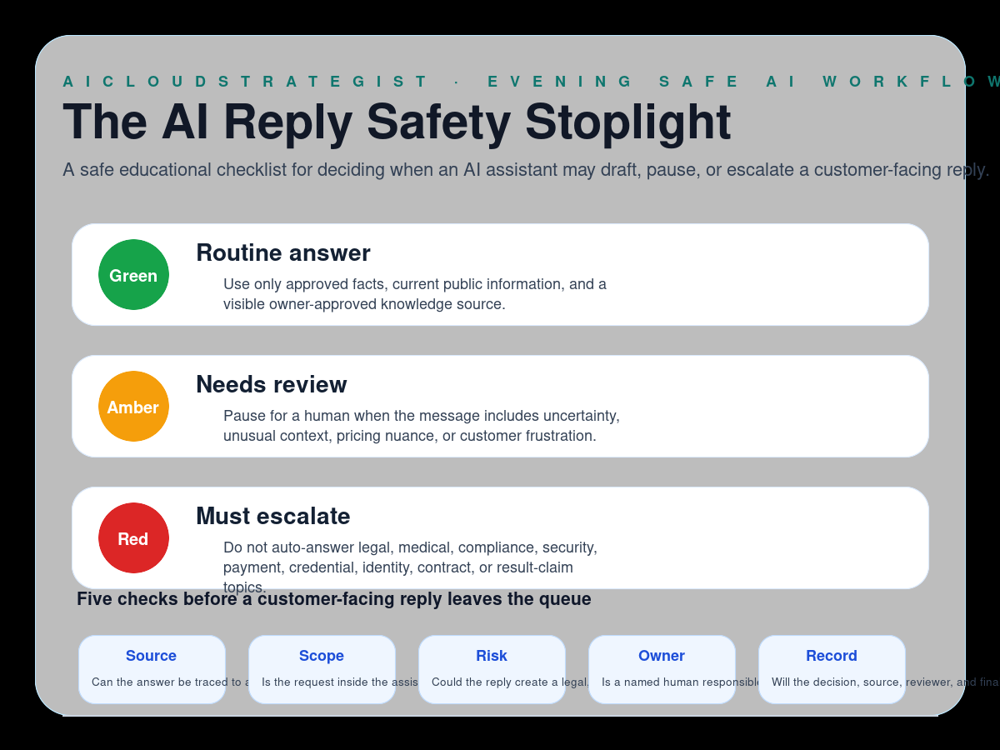

Evening publication · safe AI replies
The AI Reply Safety Stoplight
A safe educational checklist for deciding when an AI assistant may draft, pause, or escalate a customer-facing reply.

Stoplight lanes
- Green — Routine answer: Use only approved facts, current public information, and a visible owner-approved knowledge source.
- Amber — Needs review: Pause for a human when the message includes uncertainty, unusual context, pricing nuance, or customer frustration.
- Red — Must escalate: Do not auto-answer legal, medical, compliance, security, payment, credential, identity, contract, or result-claim topics.
Five checks before sending
- Source: Can the answer be traced to an approved source?
- Scope: Is the request inside the assistant’s allowed boundary?
- Risk: Could the reply create a legal, financial, health, privacy, security, or promise risk?
- Owner: Is a named human responsible for exceptions?
- Record: Will the decision, source, reviewer, and final status be logged?
How to use this stoplight
Use this stoplight before allowing an AI assistant to draft or send customer-facing replies. It keeps routine answers separate from replies that need a named human owner.
Truth boundary
Educational workflow only — not legal, compliance, medical, financial, security, certification, savings, ranking, revenue, booking, or guaranteed-performance advice.